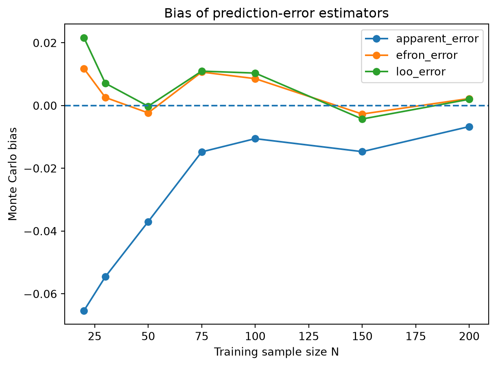
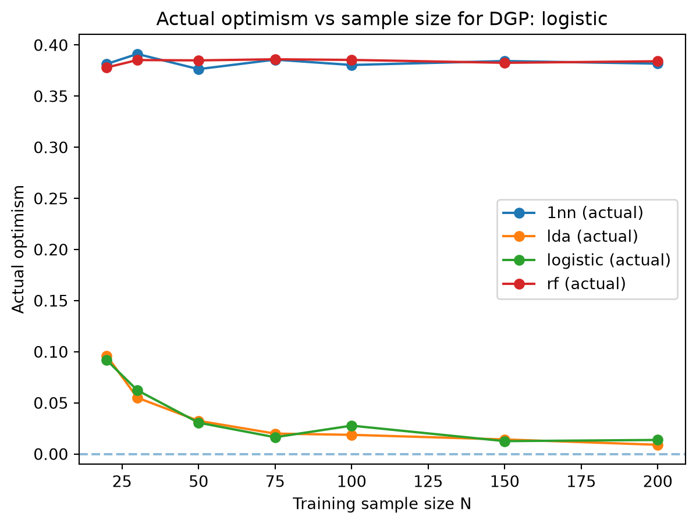
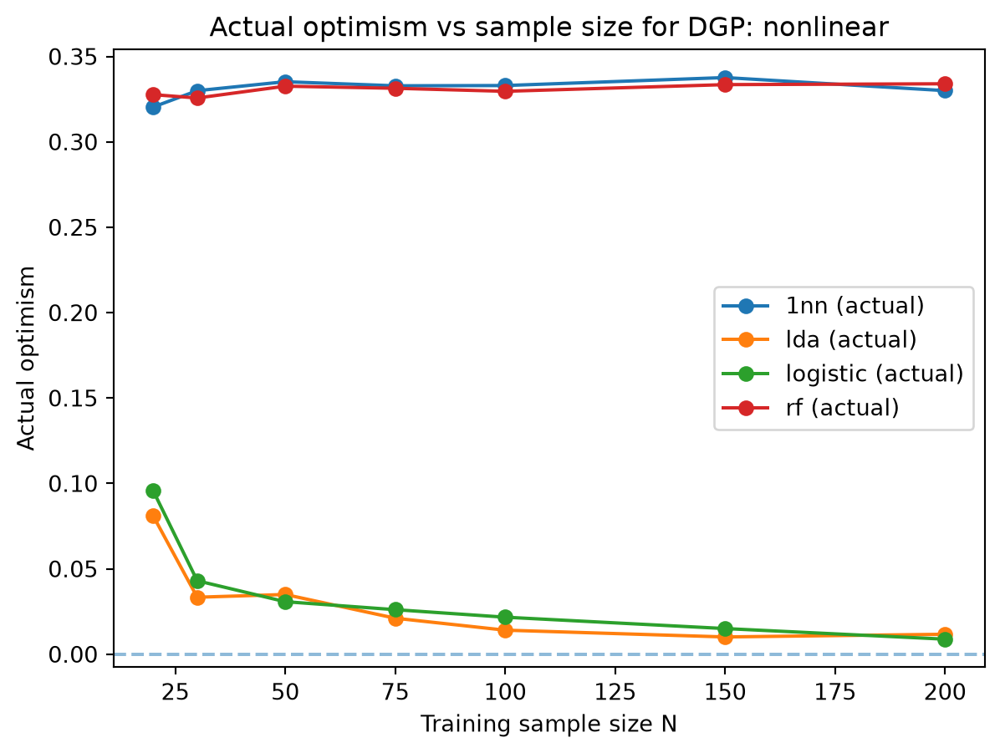

1From Apparent Error to Modern Error: Efron’s Optimism and Evaluation of Predictive Models
Bradley Efron’s 1986 paper “How Biased is the Apparent Error Rate of a Prediction Rule?” (Efron (1986)) studies a problem that now sounds somehow obvious in modern day:
If a model is fitted and evaluted on the same observations, its observed error will usually be too optimistic i.e., it will underestimate the true error of the model.
Efron calls the error measured on the fitting data the apparent error rate. The paper develops ways to estimate its downward bias, connects that bias to overfitting, and shows that several methods of model selection, including Mallows’s \(C_p\) and Akaike’s \(AIC\), can be understood as corrections for this optimism.
Modern machine learning usually handles the problem by separate the data used for fitting and evaluation:
This solves the problem Efron studied in this paper, but the underlying statistical principle has not changed. The same form of optimism can reappear whenever evaluation data influence the decisions being evaluated, which we can called evaluation bias. The goal of this discussion is to understand the statistical principles behind Efron’s optimism and how they relate to modern machine learning practices.
1.1 The basic prediction problem
Suppose we observe a dataset \(D=\{(x_i, y_i\}_{i=1}^n\). A learning procedure takes these observations and produces a fitted prediction rule \(D\to \hat{f}\). For a regression problem, \(\hat{f}(x_i)\) is a numerical prediction; for classification, it is a predicted class or probability.
Let \(Q(y_i, \hat{f}(x_i))\) denote a prediction loss. Efron’s central question is:
Once we have fitted \(\hat{f}\), how accurately does the error measured on the fitting data describe the error on new observations?
Efron defines the apparent error as the prediction error obtained by applying the fitted prediction rule back to the observations used to construct it.
NoteDefinition: Apparent Error
The apparent error for a general loss function \(Q\) is defined as: \[
\overline{\text{err}} = \frac{1}{n} \sum_{i=1}^n Q(y_i, \hat{f}(x_i))
\]
This estimate is usually biased downward because the same \(y_i\)’s were used to fit \(\hat{f}\) and to evaluate it. The data is therefore being used twice, \(D\to\) fit model and then \(D\to\) evaluate that model, which we can say that the evaluation is not independent of the fitting process.
Imagine that we are given the fitted model \(\hat{f}\). Given a new outcome \(Y_i^{\text{new}}\) from the same underlying population, Efron defines the true error as:
NoteDefinition: True Error
The true error for a general loss function \(Q\) is defined as: \[
\text{Err} = \mathbb{E}[Q(Y_i^{\text{new}}, \hat{f}(X_i^{\text{new}}))]
\]
Note that the fitted prediction rule remains fixed while the outcome is newly generated. Thus there are two quantities of interest: \(\overline{err}=\) error on the data that fitted the model versus \(Err=\) expected error on new outcomes. Efron shows that the apparent error is usually too optimistic, i.e., \(\overline{err} < Err\).
NoteDefinition: Optimism
The optimism of the apparent error is defined as: \[
\text{op} = Err - \overline{err}
\]
Taking the expectation over repeated training samples gives the expected optimism \(\omega= \mathbb E[\text{op}]\). If we can estimate \(\hat{\omega}\), we can construct a corrected prediction error estimate \[
\hat{Err}=\overline{err}+\hat{\omega}.
\]
TipExample
Suppose we have only 20 observations and fit a binary classifier. The fitted classifier makes 5 mistakes on its training data, so the apparent error is \[
\overline{err} = \frac{5}{20} = 0.25.
\]
We might be tempted to report this as the error of the model, but suppose the true expected error is actually \(Err = 0.34\). Then the optimism is \[
\text{op} = Err - \overline{err} = 0.34-0.25= 0.09.
\]
Thus the apparent evaluation was optimistic by 9 percentage points.
One of the most important contributions of Efron’s paper is that optimism can be expressed in terms of how much an observation influences its own prediction.
For binary classification, the expected optimism can be written in a covariance form approximately like this:
This gives a useful interpretation. Suppose changing \(y_i\) barely affects the fitted model. Then \(Y_i\) and \(\hat{Y_i}\) are nearly independent, so the covariance is near zero. The optimism is small, and the apparent error is a good estimate of the true error. But suppose the model is extremely flexible, so chaging \(y_i\) drastically changes the fitted model. Then \(\text{Cov}(Y_i, \hat{Y_i})\) is large, the optimism is large, and the apparent error is a poor estimate of the true error. Therefore,
This provides a quantitative connection between prediction error and what we would now call model flexibility or overfitting.
1.2 Logistic Regression
Efron gives special attention to logistic regression in the paper. Suppose \(Y_i \sim \text{Bernoulli}(\pi_i)\), where \(\pi_i = P(Y_i=1\mid t_i)\). The logistic model is
\[
\pi_i = \frac{1}{1+\exp(-t_i^T \alpha)}.
\]
After maximum likelihood estimation, \(\hat{\alpha}\) produces fitted probabilities
Classification can then be performed using a cutoff \(C_0\), \[
\hat{Y}_i = \begin{cases}
1 & \text{if } \hat{\pi}_i \geq C_0, \\
0 & \text{otherwise}.
\end{cases}
\]
For logistic regression with counting error, Efron derives the estimator
Here, \(\phi(z) = \frac{1}{\sqrt{2\pi}}\exp\left(-\frac{z^2}{2}\right)\) is the standard normal density.
TipEfron’s football example
Efron models the probability of a successful field goal as a logistic function of kicking distance. Using all \(n=100\) kicks, the fitted model has apparent error \(\overline{err}=\) 0.310. Efron’s estimate optimism is approximately \(\hat{\omega}=\) 0.012, thus the corrected error is roughly 0.310+0.012=0.322.
We may say that the optimism is relatively small. However, when only a random subset of \(n=20\) observation is used, the appearent error is 0.4, while the estimated optimism increases to approximately 0.066.
With 100 observations and only two parameters, each observation has relatiecly little influence. With only 20 observations, fitting becomes more sensitive to individual observations.
TipSampling experiment example
For each observation, \(Y_i=1\) with probability 1/2, and \(Y_i=0\) with probability 1/2. Conditional on \(Y_i\), generate a two-dimensional predictor
Thus \(Y_i=\) 1 has predictor distribution centered around (0.5, 0), while \(Y_i=\) 0 has predictor distribution centered around (-0.5, 0).
import numpy as np import matplotlib.pyplot as pltrng = np.random.default_rng(123)n =100Y = rng.binomial(n=1, p=0.5, size=n)S1 = (Y-0.5) + rng.normal(loc=0, scale=1, size=n)S2 = rng.normal(loc=0, scale=1, size=n)for y in [0, 1]: plt.scatter(S1[Y==y], S2[Y==y], label=f'Y={y}', alpha=0.5)plt.xlabel('S1')plt.ylabel('S2')plt.title('Simulated Data')plt.legend()plt.show()
Under this construction, \(P(Y_i=1\mid S_i)\) follows a logistic model with \(t_i^\top = (1, S_i^\top)\) and true coefficient vector \(\alpha = (0, 1, 0)^\top\). Each simulated dataset contains only \(n=20\) observations. Efron then generates 100 datasets, fits logistic regression to each one, and uses \(C_0=\) 0.5 for classification.
The average results reported in the paper are approximately:
Quantity
Mean
True error \(Err\)
0.342
Apparent error \(\overline{err}\)
0.254
Actual expected optimism
0.088
ML error \(\hat{Err}\)
0.346
Estimated optimism \(\omega(\hat \pi)\)
0.093
CV error \(\hat{Err}^{\text{CV}}\)
0.349
CV optimism \(\hat{\omega}^{\text{CV}}\)
0.096
1.3 Bootstrap, AIC, and Mallows’s \(C_p\)
Optimism can be estimated using a parametric bootstrap. The general logic is:
Fit the model to obtain \(\hat{\pi}_i\).
Generate a bootstrap response \(Y_i^*\sim \text{Bernoulli}(\hat{\pi}_i)\).
Refit the model using \(Y^*\).
Evaluate how optimistic that bootstrap model’s apparent error is.
Repeat many times.
Average the bootstrap optimism.
This approach can be applied to prediction rules for which a convenient analytic formula such as Equation 1.1 is not available. For the football example, Efron’s bootstrap calculation and analytic approximation were very close.
The framework was extended beyond binary classification to general exponetial family models. For a maximum likelihood model with \(p\) parameters and deviance loss, Efron obtains approximately
\[
\omega \approx \frac{2p}{n}.
\]
Thus the corrected prediction error has the form
\[
\text{training deviance} + \frac{2p}{n}.
\]
After accounting for normalization, this corresponds to
\[
AIC = -2\log(L(\hat \theta)) + 2p.
\]
Efron therefore provides an interpretation of the familiar \(AIC\) penalty as a correction for optimism. The maximized likelihood rewards goodness of fit, while \(2p\) penalizes the optimism introduced by estimating parameters.
For ordinary least squares regression with normally distributed errors and squared-error loss, Efron’s framework produces Mallows’s \(C_p\) criterion. In that setting the correction has the familiar form
\[
\text{training SSE} + 2p\sigma^2.
\]
The apparent diversity between \(C_p\), \(AIC\), and Efron’s logistic correction therefore has a common idea: the estimated prediction error is the sum of in-sample error with complexity penalty that corrects for optimism. The penalty attempts to compensate for the model’s ability to adapt itself to the observed sample.
1.4 Modern machine learning approaches
In modern supervisde learning, we commonly assume that the data is generated from some underlying distribution \(P(X, Y)\), and we have a training sample \(D=\{(x_i, y_i)\}_{i=1}^n\) drawn i.i.d. from that distribution. The goal is to learn a prediction rule \(\hat{f}\) that generalizes well to new observations drawn from the same distribution.
NoteDefinition: Generalization Error
The generalization error (Perlaza and Zou (2024)) of a prediction rule \(\hat{f}\) is defined as the expected loss on new observations drawn from the underlying distribution: \[
\text{Generalization Error} = \mathbb{E}_{(X, Y) \sim P}[Q(Y, \hat{f}(X))].
\]
If \(f\) was selected using the same data that is used to evaluate it, then the evaluation will be biased downward. This is the same principle that Efron studied in his paper.
Modern ML usually does not attempt to correct that bias; instead, we change the evaluation design. Dividing the available observations into independent subsets
We use only \(D_{\text{train}}\) to construct the model \(D_\text{train}\to \hat{f}\), and then we use \(D_{\text{validation}}\) to evaluate it. If we need to tune hyperparameters, we can use \(D_{\text{validation}}\) for that purpose. Finally, we can use \(D_{\text{test}}\) to obtain an unbiased estimate of the generalization error. Because the test observation did not determine \(\hat{f}\), they do not have the self infludence that Efron studied, and the evaluation is unbiased. Instead of correcting the dependence, we try to avoid it.
flowchart LR
A[Training set] --> B[Fit parameters]
B --> C[Validation set]
C --> D[Choose hyperparameters/model]
D --> E[Freeze model]
E --> F[Test set]
F --> G[Final performance estimate]
1.5 Simulation Study
This study has two layers. First, we reproduce the main sampling experiment in Efron’s paper. Then we extend the experiment by changing sample size, data generating process, and model complexity. This let us move beyond the specific example in the paper and explore how optimism behaves in a more general setting. For source code, see the GitHub repository.
import subprocessimport sysfrom pathlib import Pathfrom time import perf_counterimport matplotlib.pyplot as pltimport numpy as npimport pandas as pd
Suppose the classifier predicts \(\hat{Y}_i=1\). It will make an error if a new response equals zero. The probability of that is \(1-\pi_i\). If instead \(\hat{Y}_i=0\), the probability of an error is \(\pi_i\). Therefore
For one dataset, it may not equal the true error. That is why we need Monte Carlo simulation rather than single run.
err_loo = loo_cv_error(model, X, y)err_loo
0.19999999999999996
For observation \(i\), LOO fits \(\hat{f}^{(-i)}\) using every observation except \(i\), and then it predicts \(\hat Y_i\). Therefore \(Y_i\) cannot directly influence its own fitted prediction. The LOO estimate is
Now that the replication works, we will change the number of observations. Use \(N\in \{20, 30, 50, 75, 100, 150, 200\}\) to see how the bias changes with sample size.
SAMPLE_SIZES = [20, 30, 50, 75, 100, 150, 200]
The hypothesis is that as \(N\) grows, each observation has less influence on the fitted model.
plt.figure(figsize=(7, 5))for estimator, g in (bias_by_n.groupby("estimator")): plt.plot(g["n"], g["bias"], marker="o", label=estimator)plt.axhline(0,linestyle="--")plt.xlabel("Training sample size N")plt.ylabel("Monte Carlo bias")plt.title("Bias of prediction-error estimators")plt.legend()plt.show()

1.5.2 Different data generating process
Now we want to generate the predictors from a different distribution. Instead of the original Efron DGP, we will generate \(X_1, X_2\sim \mathcal N(0, 1)\) and define
LOO is computationally expensive and less common (I believe) in modern ML workflows. We will use 5(or 10)-K fold cross-validation instead.
In the extended simulation, LOO is omitted for random forest because leave-one-out would require refitting a full forest once per observation inside every Monte Carlo replication. The random forest comparison still uses apparent error, 10-fold CV, bootstrap correction, and independent test error.
For models other than logistic regression, Efron’s Equation 1.1 is not applicable. We will use a bootstrap optimism correction (Efron and Gong (1983)).
For each bootstrap sample \(D^{*b}\), we fit a model. That model performs better on the bootstrap sample that created it than on the original observations. So we estimate
Then \(\hat{Err}_\text{boot} = \overline{err} + \hat{\omega}_{\text{boot}}\) is the bootstrap optimism-corrected error estimate. Note that this implementation is a generic nonparametric bootstrap extension rather than the specific parametric Bernoulli bootstrap that Efron used for logistic regression.
Now we want to generate completely new pairs \((X^{\text{new}}, Y^{\text{new}})\) instead of estimating \(Err\)= new \(Y\) at existing \(X\). This is more consistent with the modern ML definition of generalization error.
Now we can evaluate arbitrary DGP/model combinations.
We now have a single experimental unit that accepts \((N, \text{DGP}, \text{model})\) and returns the various error estimates. We can now run a Monte Carlo simulation to explore how the bias behaves under different conditions.
SAMPLE_SIZES = [20, 30, 50, 75, 100, 150, 200] #how does data quantity affect optimism?DGPS = ["efron", "logistic", "nonlinear"] # how dependent are the conclusions on the population mechanism?MODELS = ["logistic", "lda", "1nn", "rf"] # how does model complexity affect optimism?
Now we can run a full factorial experiment with all combinations of \((N, \text{DGP}, \text{model})\).
for dgp in DGPS: subset = model_optimism[model_optimism["dgp"] == dgp] plt.figure(figsize=(7, 5))for model_name, g in subset.groupby("model"): plt.plot(g["n"],g["actual_optimism"],marker="o",label=f"{model_name} (actual)") plt.axhline(0, linestyle="--", alpha=0.5) plt.xlabel("Training sample size N") plt.ylabel("Actual optimism") plt.title(f"Actual optimism vs sample size for DGP: {dgp}") plt.legend() plt.show()


The original Efron experiment changes sample size but keeps the DGP and model fixed. This extension changes the flexibility of the model and the underlying population mechanism, so we can investigate both dimensions of optimism.
Efron, Bradley. 1986. “How Biased Is the Apparent Error Rate of a Prediction Rule?”Journal of the American Statistical Association 81 (394): 461–70. https://doi.org/10.2307/2289236.
Efron, Bradley, and Gail Gong. 1983. “A Leisurely Look at the Bootstrap, the Jackknife, and Cross-Validation.”American Statistician 37 (1): 36–48. https://doi.org/10.1080/00031305.1983.10483087.
Perlaza, Samir M., and Xinying Zou. 2024. The Generalization Error of Machine Learning Algorithms. arXiv:2411.12030. arXiv. https://doi.org/10.48550/arXiv.2411.12030.